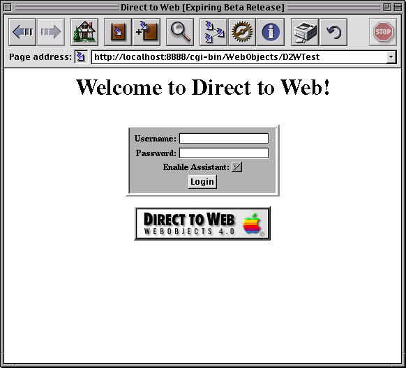

Table of Contents
Table of Contents  Next Section
Table of Contents
Next Section
Table of Contents  Previous Section
Previous Section

The login page is the default implementation of your Main component, Main.wo. It contains text fields to enter a name and password, as well as a submit button (Login) and an Enable Assistant checkbox. To go to the application's default first page, check Enable Assistant and click the Login button. You don't need to enter a name and password, because the default application provides no password-checking logic. If you don't check Enable Assistant before clicking the Login button, you won't have access to the WebAssistant.
You can modify the login page (Main.wo) to provide any behavior or appearance you like. For example, you can add your own password-checking logic. See "Modifying Your Application's Code" for more information.
Table of Contents Next Section